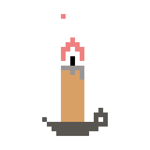

My name is Calvin and I'm an aspiring UI/UX designer. I currently attend UCI and study informatics at the Donald Bren School of Information and Computer Sciences. My specialty is in human-computer interaction. I've also dabbled a bit in graphic design. Check out some stuff that I've done under the 'work' tab!
You can reach me at calvidn2@uci.eduI look forward to hearing from you! 